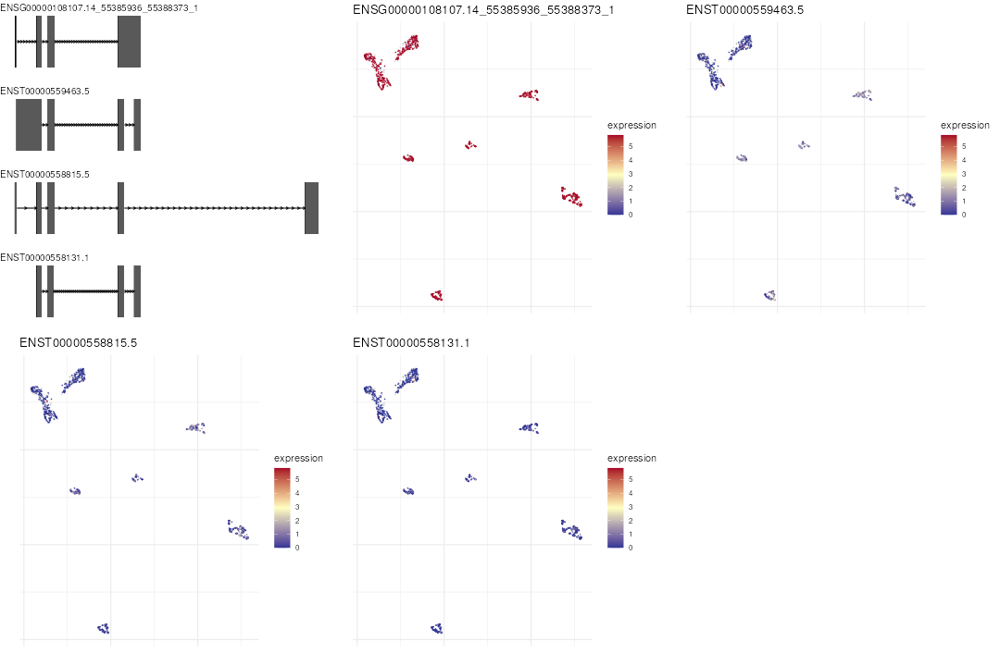
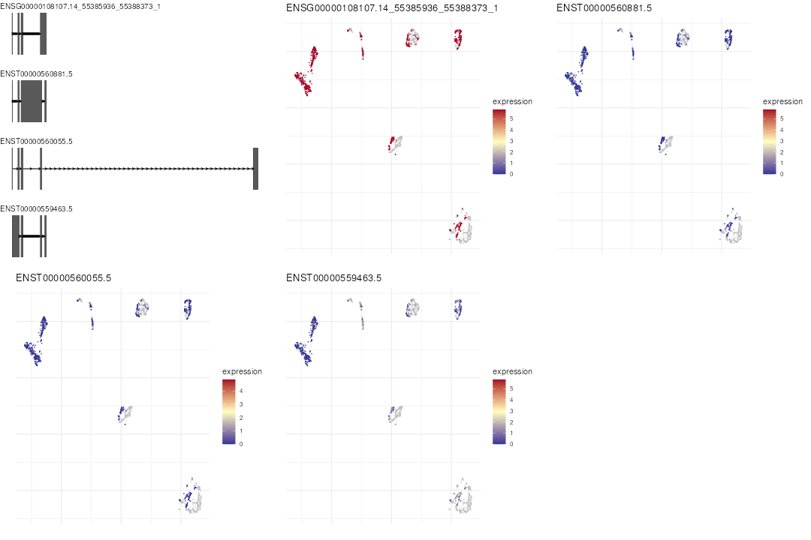
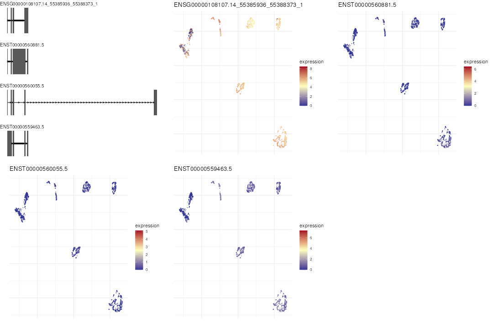

FLAMES
Oliver Voogd, Changqing Wang, Yupei You
Source:vignettes/FLAMES_vignette.Rmd
FLAMES_vignette.RmdFLAMES
The FLAMES package provides a framework for performing single-cell and bulk read full-length analysis of mutations and splicing. FLAMES performs cell barcode and UMI assignment from nanopore reads as well as semi-supervised isoform detection and quantification. FLAMES is designed to be an easy and quick to use, powerful workflow for isoform detection and quantification, splicing analysis and mutation detection, and seeks to overcome the limitations of other tools, such as an inability to process single cell data, and a focus on cell barcode and UMI assignment (Tian et al. 2020).
This R package represents an enhanced iteration of the FLAMES Python module that originally designed to support the research work presented in Comprehensive characterization of single-cell full-length isoforms in human and mouse with long-read sequencing by Tian et al (2020). This upgraded R version not only simplifies the installation and execution processes but also incorporates additional functionality, streamlining the analysis of single-cell full-length isoforms using long-read sequencing data.
When processing single cell data, FLAMES can be run on data generated
from long-read platform with or without matched short-read sequencing
data. If only the long reads are available, FLAMES takes as input the
long reads in fastq files. The blaze() function is then
called to demultiplex the long reads into cell-specific fastq files. If
the short-read data are unavailable, FLAMES incorporates the BLAZE as
blaze() function to identify cell barcodes solely from long
reads (You et al. 2023). The
blaze() function is called to locate the barcode sequencing
in the long-reads, identify barcode allow-list directly from long reads,
assign reads to cells (i.e., demultiplexing) and trims the cell barcodes
and the flanking UMI sequence.
When matched short-read single-cell RNA sequencing data is available,
FLAMES could take the cell barcode allow-list generated from short reads
in addition to the long-read fastq files. The short-read allow-list will
used as a reference to guide the demultiplexing of the long reads. To do
this, FLAMES incorporates the flexiplex as
find_barcode() function to perform demultiplexing (Davidson et al. 2023). The
find_barcode() function is called to extract the cell
barcode and UMI sequence from the long reads, using the allow-list as a
reference.
After the demultiplexing, the pipeline calls
minimap_align(), a minimap2 wrapper, to align
the demultiplex long-reads to the reference genome.
quantify_gene() is then called to deduplicate reads from
same unique molecular identifiers (UMIs) and generate gene-level UMI
counts. Note that during the UMI deduplication, the pipeline only keeps
the longest reads among those with the same UMI for downstream
steps.
Next, find_isoform() is called to identify novel
isoforms using the alignment, creating an updated transcript assembly.
In this step, the users may choose to use bambu, which is designed
for transcript discovery and quantification using long read RNA-Seq data
(Chen et al. 2023). Otherwise, users could
use the build-in isoform identification methods in FLAMES. Both methods
have been wrapped in the find_isoform() function.
Afterwards, the demultiplexed reads are aligned to the transcript
assembly by the function minimap_realign(). Finally, FLAMES
calls quantify_transcript() to quantify the transcript
counts using the (re-)alignment file.
Figure @ref(fig:workflow) summerise the steps of the pipeline
described above. The pipeline functions (sc_long_pipeline,
bulk_long_pipeline,
sc_long_multisample_pipline) execute the steps sequentially
and return SingleCellExperiment object,
SummarizedExperiment object and a list of
SingleCellExperiment objects respectivly.
For read alignment and realignment, FLAMES uses minimap2, a versatile alignment program for aligning sequences against a reference database (Li 2018). This software needs to be downloaded prior to using the FLAMES pipeline, and can be found at https://github.com/lh3/minimap2.
FLAMES Pipeline Execution
This vignette will detail the process of running the FLAMES pipeline.
It details the execution of both the single cell pipeline
(sc_long_pipeline()) and the bulk data pipeline
(bulk_long_pipeline()).
FLAMES Single Cell Pipeline
Environment setup
To get started, the pipeline needs access to a gene annotation file in GFF3 or GTF format, a directory containing one or more FASTQ files (which will be merged as pre-processing), a genome FASTA file, as well as the file path to minimap2, and the file path to the directory to hold output files.
The single cell pipeline can demultiplex the input data before
running, if required. This can be disabled by setting the
do_barcode_demultiplex argument in the config file to
FALSE when calling the pipeline. This example dataset has
already been demultiplexed.
For this example, the required files are downloaded from GitHub using BiocFileCache (Shepherd and Morgan 2021).
temp_path <- tempfile()
bfc <- BiocFileCache::BiocFileCache(temp_path, ask = FALSE)
file_url <-
"https://raw.githubusercontent.com/OliverVoogd/FLAMESData/master/data"
annot <- bfc[[names(BiocFileCache::bfcadd(
bfc, "Annotation",
file.path(file_url, "gencodeshortened.gtf")
))]]
genome_fa <- bfc[[names(BiocFileCache::bfcadd(
bfc,
"Genomefa",
file.path(file_url, "GRCh38shortened.fa")
))]]
fastq <- bfc[[names(BiocFileCache::bfcadd(
bfc, "Fastq", file.path(file_url, "sc_align2genome.sample.fastq.gz")))]]
# setup other environment variables
outdir <- tempfile()
dir.create(outdir)
config_file <- FLAMES::create_config(outdir, type = "SIRV", do_barcode_demultiplex = TRUE)
#> Registered S3 method overwritten by 'GGally':
#> method from
#> +.gg ggplot2
#> Writing configuration parameters to: /tmp/RtmpsYpfbT/file1d782cd215af/config_file_7544.jsonThe optional argument config_file can be given to both
bulk_long_pipeline() and sc_long_pipeline() in
order to customise the execution of the pipelines. It is expected to be
a JSON file, and an example can be found by calling
FLAMES::create_config, which returns the path to a copy of
the default JSON configuration file. The values from the default configs
can be altered by either editing the JSON file manually, or passing
additional arguments to FLAMES::create_config, for example,
FLAMES::create_config(outdir, type = "sc_3end", min_sup_cnt = 10)
with create a copy of the default config for 10X 3’ end nanopore single
cell reads, with the min_sup_cnt value (minimal number of
supporting reads for a novel isoform to pass filtering) changed to
10.
This vignette uses the default configuration file created for SIRV reads.
FLAMES execution
Once the initial variables have been setup, the pipeline can be run using:
library(FLAMES)
# do not run if minimap2 cannot be found
if (!any(is.na(sys_which(c("minimap2", "k8"))))) {
sce <- sc_long_pipeline(
annotation = annot, fastq = fastq, genome_fa = genome_fa,
outdir = outdir, config_file = config_file, expect_cell_number = 10)
}If, however, the input fastq files need to be demultiplexed, then the
reference_csv argument will need to be specified -
reference_csv is the file path to a cell barcode
allow-list, as a text file with one barcode per line. The
filtered_feature_bc_matrix/barcodes.tsv.gz from
cellranger outputs can be used to create such allow-list,
with
zcat barcodes.tsv.gz | cut -f1 -d'-' > allow-list.csv.
The pipeline can alse be run by calling the consituent steps sequentially:
library(FLAMES)
# do not run if minimap2 cannot be found
if (!any(is.na(sys_which(c("minimap2", "k8"))))) {
config <- jsonlite::fromJSON(config_file)
# find_barcode(...)
genome_bam <- rownames(minimap2_align(
config = config, fa_file = genome_fa, fq_in = fastq, annot = annot,
outdir = outdir
))
find_isoform(
annotation = annot, genome_fa = genome_fa,
genome_bam = genome_bam, outdir = outdir, config = config
)
minimap2_realign(
config = config, fq_in = fastq,
outdir = outdir
)
quantify_transcript(annotation = annot, outdir = outdir, config = config)
sce <- create_sce_from_dir(outdir = outdir, annotation = annot)
}Visulisation
The plot_isoform_reduced_dim() function can be used to
visualise the isoform expression in reduced dimensions. The function
takes a SingleCellExperiment object and either a gene ID or
a vector of transcript IDs as input. If the
SingleCellExperiment object contains gene counts with the
transcript counts stored as the “transcript” altExp slot,
the function will use the reduced dimensions of the gene counts and plot
the transcript expression values.
library(FLAMES)
library(SingleCellExperiment)
# just the transcript counts
scmixology_lib10_transcripts |>
scuttle::logNormCounts() |>
scater::runPCA() |>
scater::runUMAP() |>
plot_isoform_reduced_dim('ENSG00000108107')
# SCE with gene counts as main assay and transcript counts as altExp
scmixology_lib10 <- scmixology_lib10[, colSums(counts(scmixology_lib10)) > 0]
sce_lr <- scmixology_lib10[, colnames(scmixology_lib10) %in% colnames(scmixology_lib10_transcripts)]
altExp(sce_lr, "transcript") <- scmixology_lib10_transcripts[, colnames(sce_lr)]
sce_lr |>
scuttle::logNormCounts() |>
scater::runPCA() |>
scater::runUMAP() |>
plot_isoform_reduced_dim('ENSG00000108107')
Imputation
For experiments where the long-read is preformed on a subsample of
cells and short-reads are preformed on the full sample, the
combine_sce() function can be used to combine the
SingleCellExperiment objects of the two samples. The first
argument should be the subsample where the main assay is the gene counts
and the transcript counts is saved as the “transcript”
altExp slot. The second argument should be the other sample
with only gene counts. This function returns a
SingleCellExperiment object with the main assay containing
the combined gene counts and a “transcript” altExp slot,
where cells missing long-read data have NA values. The
sc_impute_transcript() function can be then used to impute
the missing transcript counts using the gene counts. The
plot_isoform_reduced_dim() function can handle the
SingleCellExperiment object with the combined gene and
transcript counts, with or without imputed values, NA
values will be plotted in grey.
combined_sce <- combine_sce(sce_lr, scmixology_lib90)
combined_sce <- combined_sce |>
scuttle::logNormCounts() |>
scater::runPCA() |>
scater::runUMAP()
# plot without imputation
plot_isoform_reduced_dim(combined_sce, 'ENSG00000108107')
# impute missing transcript counts
combined_sce_impute <- sc_impute_transcript(combined_sce)
#> Imputing transcript counts ...
plot_isoform_reduced_dim(combined_sce_impute, 'ENSG00000108107')
FLAMES termination
The directory outdir now contains several output files
returned from this pipeline. The output files generated by this pipeline
are:
-
transcript_count.csv.gz- a transcript count matrix (also contained in the output SummarizedExperiment or SingleCellExperiment) -
isoform_annotated.filtered.gff3- found isoform information in gff3 format -
transcript_assembly.fa- transcript sequence from the isoforms -
align2genome.bamsorted BAM file with reads aligned to genome (intermediate FLAMES step) -
realign2transcript.bam- sorted realigned BAM file using the transcript_assembly.fa as reference (intermediate FLAMES step) -
tss_tes.bedgraph- TSS TES enrichment for all reads (for QC)
The pipeline also returns a SummarizedExperiment
or SingleCellExperiment
object, depending on the pipeline run, containing the data from
transcript_count.csv.gzand
isoform_annotated.filtered.gff3 (Amezquita et al. 2020) (Morgan et al. 2020). This SummarizedExperiment
(or SingleCellExperiment)
object contains the same data as present in the outdir
directory, and is given to simplify the process of reading the
transcript count matrix and annotation data back into R, for further
analysis.
FLAMES Bulk Pipeline
A basic example of the execution of the FLAMES bulk pipeline is given below. The process for this is essentially identical to the above example for single cell data.
Environment setup
To get started, the pipeline needs access to a gene annotation file in GFF3 or GTF format, a directory containing one or more FASTQ files (which will be merged as pre-processing), a genome FASTA file, as well as the file path to minimap2, and the file path to the directory to hold output files.
For this example, these files are downloaded from GitHub using BiocFileCache (Shepherd and Morgan 2021).
temp_path <- tempfile()
bfc <- BiocFileCache::BiocFileCache(temp_path, ask = FALSE)
file_url <-
"https://raw.githubusercontent.com/OliverVoogd/FLAMESData/master/data"
annot <- bfc[[names(BiocFileCache::bfcadd(
bfc, "Annotation",
file.path(file_url, "SIRV_isoforms_multi-fasta-annotation_C_170612a.gtf")
))]]
genome_fa <- bfc[[names(BiocFileCache::bfcadd(
bfc, "Genomefa",
file.path(file_url, "SIRV_isoforms_multi-fasta_170612a.fasta")
))]]
# download the two fastq files, move them to a folder to be merged together
fastq1 <- bfc[[names(BiocFileCache::bfcadd(bfc, "Fastq1",
file.path(file_url, "fastq", "sample1.fastq.gz")))]]
fastq2 <- bfc[[names(BiocFileCache::bfcadd(bfc, "Fastq2",
file.path(file_url, "fastq", "sample2.fastq.gz")))]]
# the downloaded fastq files need to be in a directory to be merged together
fastq_dir <- file.path(temp_path, "fastq_dir")
dir.create(fastq_dir)
file.copy(c(fastq1, fastq2), fastq_dir)
#> [1] TRUE TRUE
unlink(c(fastq1, fastq2)) # the original files can be deleted
# setup other environment variables
outdir <- tempfile()
dir.create(outdir)
config_file <- FLAMES::create_config(outdir)
#> Writing configuration parameters to: /tmp/RtmpsYpfbT/file1d78358a0e9b/config_file_7544.jsonFLAMES termination
After the bulk pipeline has completed, the output directory contains
the same files as the single cell pipeline produces.
bulk_long_pipeline also returns a SummarizedExperiment
object, containing the same data as the SingleCellExperiment
as above (Amezquita et al. 2020) (Morgan et al. 2020).
Running with Slurm
Since the barcode demultiplexing step, isoform identification step
and quantification step is currently single threaded, job scheduler
(such as Slurm) users may want to allocate different resources for each
step. This can be achieved by calling the individual functions
(find_isoform, minimap2_realign etc.)
sequentially, or by changing the configuration file. The
Bash script below demonstrates how this can be done with a
single R script calling the pipeline function.
#!/bin/bash -x
# set all steps to false
sed -i '/"do_/s/true/false/' config_sclr_nanopore_3end.json
# set do_genome_alignment to true
sed -i '/do_genome_alignment/s/false/true/' \
config_sclr_nanopore_3end.json
srun -c 20 --mem 64GB \
Rscript flames_pipeline.R && \
sed -i '/"do_/s/true/false/' \
config_sclr_nanopore_3end.json && \
sed -i '/do_isoform_identification/s/false/true/' \
config_sclr_nanopore_3end.json && \
srun -c 1 --mem 64GB --ntasks=1 \
Rscript flames_pipeline.R && \
sed -i '/"do_/s/true/false/' \
config_sclr_nanopore_3end.json && \
sed -i '/do_read_realignment/s/false/true/' \
config_sclr_nanopore_3end.json && \
srun -c 20 --mem 64GB --ntasks=1 \
Rscript flames_pipeline.R && \
sed -i '/"do_/s/true/false/' \
config_sclr_nanopore_3end.json && \
sed -i '/do_transcript_quantification/s/false/true/' \
config_sclr_nanopore_3end.json && \
srun -c 1 --mem 64GB --ntasks=1 \
Rscript flames_pipeline.R && \
echo "Pipeline finished"The Bash script can then be executed inside a tmux or
screen session with:
Session Info
#> R version 4.4.1 (2024-06-14)
#> Platform: x86_64-pc-linux-gnu
#> Running under: Ubuntu 22.04.4 LTS
#>
#> Matrix products: default
#> BLAS: /usr/lib/x86_64-linux-gnu/openblas-pthread/libblas.so.3
#> LAPACK: /usr/lib/x86_64-linux-gnu/openblas-pthread/libopenblasp-r0.3.20.so; LAPACK version 3.10.0
#>
#> locale:
#> [1] LC_CTYPE=en_US.UTF-8 LC_NUMERIC=C
#> [3] LC_TIME=en_US.UTF-8 LC_COLLATE=en_US.UTF-8
#> [5] LC_MONETARY=en_US.UTF-8 LC_MESSAGES=en_US.UTF-8
#> [7] LC_PAPER=en_US.UTF-8 LC_NAME=C
#> [9] LC_ADDRESS=C LC_TELEPHONE=C
#> [11] LC_MEASUREMENT=en_US.UTF-8 LC_IDENTIFICATION=C
#>
#> time zone: UTC
#> tzcode source: system (glibc)
#>
#> attached base packages:
#> [1] stats4 stats graphics grDevices utils datasets methods
#> [8] base
#>
#> other attached packages:
#> [1] SingleCellExperiment_1.26.0 SummarizedExperiment_1.34.0
#> [3] Biobase_2.64.0 GenomicRanges_1.56.1
#> [5] GenomeInfoDb_1.40.1 IRanges_2.38.1
#> [7] S4Vectors_0.42.1 BiocGenerics_0.50.0
#> [9] MatrixGenerics_1.16.0 matrixStats_1.4.1
#> [11] FLAMES_1.11.1 BiocStyle_2.32.1
#>
#> loaded via a namespace (and not attached):
#> [1] fs_1.6.4 ProtGenerics_1.36.0
#> [3] bitops_1.0-8 httr_1.4.7
#> [5] RColorBrewer_1.1-3 doParallel_1.0.17
#> [7] tools_4.4.1 backports_1.5.0
#> [9] utf8_1.2.4 R6_2.5.1
#> [11] HDF5Array_1.32.1 lazyeval_0.2.2
#> [13] uwot_0.2.2 rhdf5filters_1.16.0
#> [15] GetoptLong_1.0.5 withr_3.0.1
#> [17] prettyunits_1.2.0 GGally_2.2.1
#> [19] gridExtra_2.3 cli_3.6.3
#> [21] textshaping_0.4.0 labeling_0.4.3
#> [23] ggbio_1.52.0 sass_0.4.9
#> [25] pkgdown_2.1.0.9000 Rsamtools_2.20.0
#> [27] systemfonts_1.1.0 txdbmaker_1.0.1
#> [29] foreign_0.8-87 R.utils_2.12.3
#> [31] dichromat_2.0-0.1 scater_1.32.1
#> [33] parallelly_1.38.0 BSgenome_1.72.0
#> [35] limma_3.60.4 rstudioapi_0.16.0
#> [37] RSQLite_2.3.7 FNN_1.1.4
#> [39] generics_0.1.3 shape_1.4.6.1
#> [41] BiocIO_1.14.0 dplyr_1.1.4
#> [43] Matrix_1.7-0 ggbeeswarm_0.7.2
#> [45] fansi_1.0.6 abind_1.4-8
#> [47] R.methodsS3_1.8.2 lifecycle_1.0.4
#> [49] yaml_2.3.10 edgeR_4.2.1
#> [51] rhdf5_2.48.0 SparseArray_1.4.8
#> [53] BiocFileCache_2.12.0 grid_4.4.1
#> [55] blob_1.2.4 dqrng_0.4.1
#> [57] crayon_1.5.3 dir.expiry_1.12.0
#> [59] lattice_0.22-6 beachmat_2.20.0
#> [61] cowplot_1.1.3 GenomicFeatures_1.56.0
#> [63] KEGGREST_1.44.1 pillar_1.9.0
#> [65] knitr_1.48 ComplexHeatmap_2.20.0
#> [67] metapod_1.12.0 bambu_3.6.0
#> [69] rjson_0.2.22 xgboost_1.7.8.1
#> [71] codetools_0.2-20 glue_1.7.0
#> [73] data.table_1.16.0 vctrs_0.6.5
#> [75] png_0.1-8 gtable_0.3.5
#> [77] cachem_1.1.0 xfun_0.47
#> [79] S4Arrays_1.4.1 DropletUtils_1.24.0
#> [81] iterators_1.0.14 statmod_1.5.0
#> [83] bluster_1.14.0 bit64_4.0.5
#> [85] progress_1.2.3 filelock_1.0.3
#> [87] bslib_0.8.0 irlba_2.3.5.1
#> [89] vipor_0.4.7 rpart_4.1.23
#> [91] colorspace_2.1-1 DBI_1.2.3
#> [93] Hmisc_5.1-3 nnet_7.3-19
#> [95] tidyselect_1.2.1 bit_4.0.5
#> [97] compiler_4.4.1 curl_5.2.2
#> [99] httr2_1.0.4 graph_1.82.0
#> [101] htmlTable_2.4.3 BiocNeighbors_1.22.0
#> [103] basilisk.utils_1.16.0 xml2_1.3.6
#> [105] desc_1.4.3 DelayedArray_0.30.1
#> [107] bookdown_0.40 rtracklayer_1.64.0
#> [109] checkmate_2.3.2 scales_1.3.0
#> [111] RBGL_1.80.0 rappdirs_0.3.3
#> [113] stringr_1.5.1 digest_0.6.37
#> [115] rmarkdown_2.28 basilisk_1.16.0
#> [117] XVector_0.44.0 htmltools_0.5.8.1
#> [119] pkgconfig_2.0.3 base64enc_0.1-3
#> [121] sparseMatrixStats_1.16.0 highr_0.11
#> [123] dbplyr_2.5.0 fastmap_1.2.0
#> [125] ensembldb_2.28.1 rlang_1.1.4
#> [127] GlobalOptions_0.1.2 htmlwidgets_1.6.4
#> [129] UCSC.utils_1.0.0 DelayedMatrixStats_1.26.0
#> [131] farver_2.1.2 jquerylib_0.1.4
#> [133] jsonlite_1.8.8 BiocParallel_1.38.0
#> [135] R.oo_1.26.0 BiocSingular_1.20.0
#> [137] VariantAnnotation_1.50.0 RCurl_1.98-1.16
#> [139] magrittr_2.0.3 Formula_1.2-5
#> [141] scuttle_1.14.0 GenomeInfoDbData_1.2.12
#> [143] Rhdf5lib_1.26.0 munsell_0.5.1
#> [145] Rcpp_1.0.13 viridis_0.6.5
#> [147] reticulate_1.39.0 stringi_1.8.4
#> [149] zlibbioc_1.50.0 plyr_1.8.9
#> [151] ggstats_0.6.0 parallel_4.4.1
#> [153] listenv_0.9.1 ggrepel_0.9.6
#> [155] Biostrings_2.72.1 hms_1.1.3
#> [157] circlize_0.4.16 locfit_1.5-9.10
#> [159] igraph_2.0.3 reshape2_1.4.4
#> [161] biomaRt_2.60.1 ScaledMatrix_1.12.0
#> [163] XML_3.99-0.17 evaluate_0.24.0
#> [165] biovizBase_1.52.0 scran_1.32.0
#> [167] BiocManager_1.30.25 foreach_1.5.2
#> [169] tidyr_1.3.1 purrr_1.0.2
#> [171] future_1.34.0 clue_0.3-65
#> [173] ggplot2_3.5.1 rsvd_1.0.5
#> [175] restfulr_0.0.15 AnnotationFilter_1.28.0
#> [177] viridisLite_0.4.2 ragg_1.3.3
#> [179] OrganismDbi_1.46.0 tibble_3.2.1
#> [181] memoise_2.0.1 beeswarm_0.4.0
#> [183] AnnotationDbi_1.66.0 GenomicAlignments_1.40.0
#> [185] cluster_2.1.6 globals_0.16.3